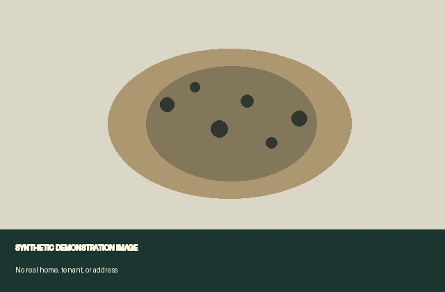
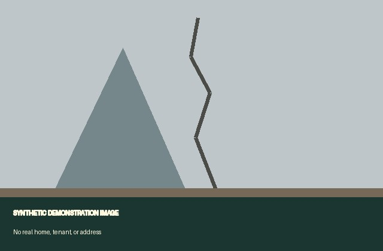

What this packet proves — and what it does not
What this packet proves
- Each photo's content has not been altered since it was captured (a SHA-256 content hash that can be re-checked against the file).
- Each item existed no later than the date on its trusted timestamp (an RFC 3161 token over the hash) — an upper bound on when it was created.
- The record of events was not reordered or edited after the fact (an append-only, hash-linked chain of custody).
What this packet does not prove
- Who took a photo, or that it depicts a particular home or unit.
- That the underlying condition was as described — that rests on the tenant's own account, not on the cryptography.
- That a timestamp is the exact moment of capture — it is only an upper bound (the content existed by then).
- Admissibility or any legal outcome. This is documentation, not legal advice.
How to verify: run `habitable verify` against the accompanying bundle.json, or cross-check the hashes and RFC 3161 tokens with standard tools. The accessible reading of this packet is packet.html.
What this packet discloses
- The shared photos in this packet have had location (GPS) removed, so they do not reveal where the tenant lives.
Issue: No heat overnight
Synthetic scenario: the room remained cold while the heater was set to warm.
Timeline
- observed: Synthetic thermostat display read 49 F during the night.
Captured evidence

Issue: Recurring ceiling leak and mold-like spotting
Synthetic scenario: staining returned after rain and spread across the ceiling.
Timeline
- observed: Synthetic tenant observed new staining after rainfall.
- sent_request: Synthetic repair request sent to the property manager.
- follow_up: Synthetic follow-up recorded after the staining expanded.
Captured evidence


Evidence appendix
| Capture | Content hash (SHA-256) | Timestamp | Authority |
|---|---|---|---|
| cap-d871ce0e4d965b97 | 3b8407885635d168ac0a676d18c194cd170403f4b559e69df29af8ef02be9ec8 | verified | sample-offline-rfc3161 |
| cap-7f59015c8a322b59 | 3ee3f8106e1718fdc4699c3bfa99ff005446008d54f0a71499c5aeb58dff8103 | verified | sample-offline-rfc3161 |
| cap-0c2a8d9326ee98ae | 81dc3e113fbab34c8134646e2856cd546d668a6169d958aff5012a1c4e26e95d | verified | sample-offline-rfc3161 |